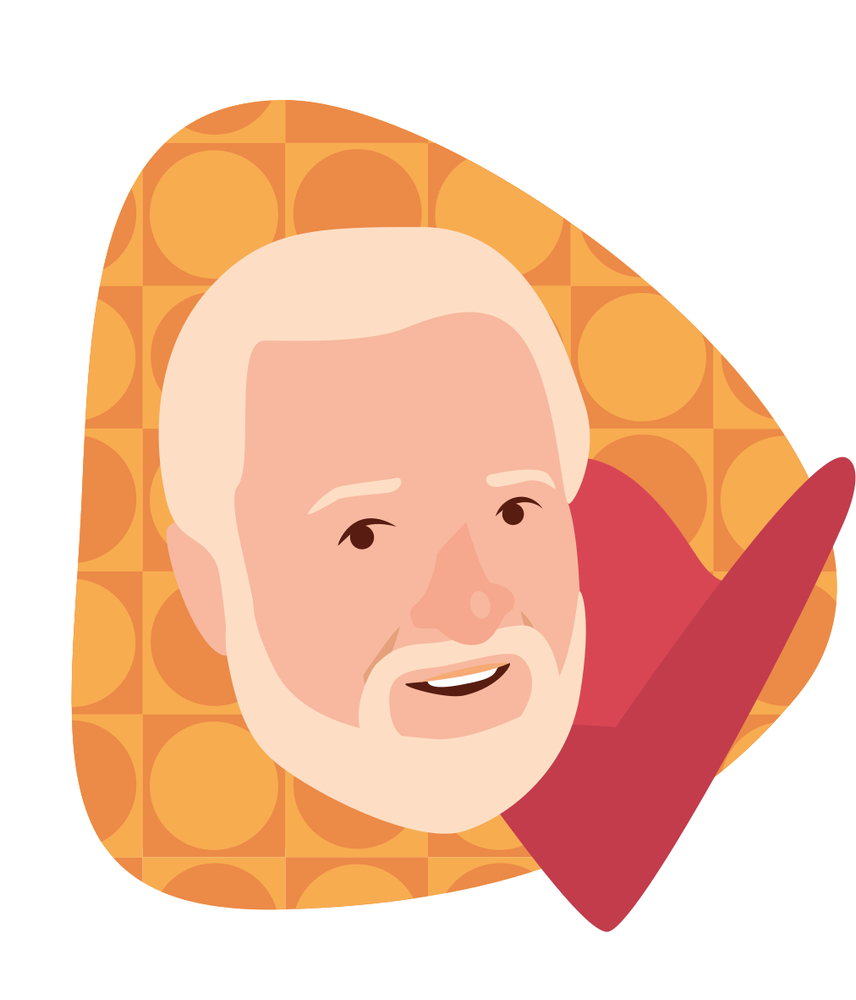
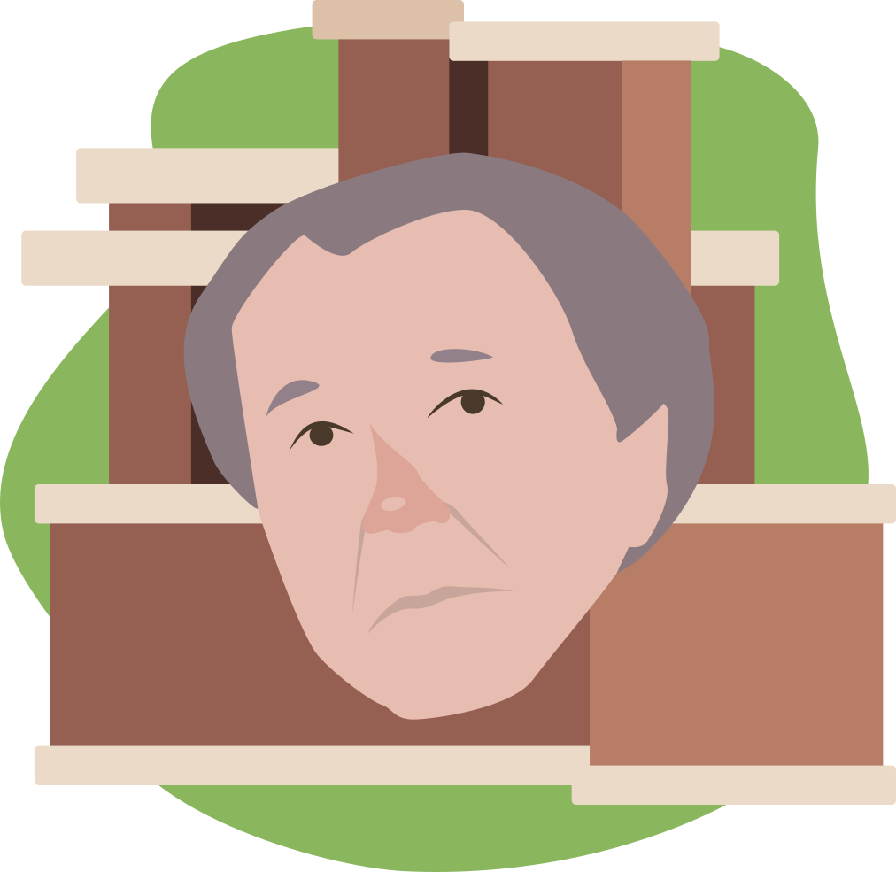
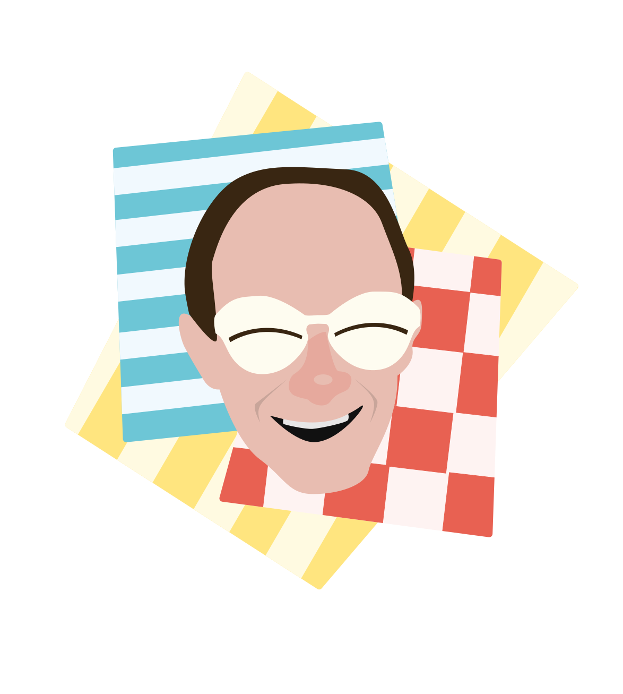
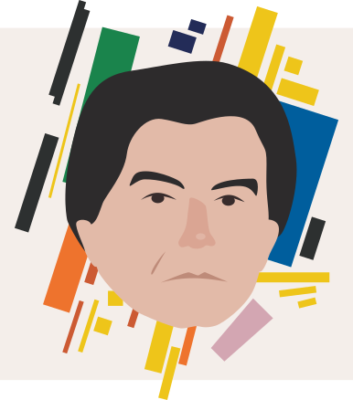

Серия стилизованных портретов
Проект создан в рамках задания по дисциплине «Прикладной дизайн». Представляет собой серию из четырёх стилизованных портретов известных личностей, связанных с историей дизайна: Вернер Пантон, Фрэнк Ллоид Райт, Андре Курреж, Казимир Малевич. Помимо портретной схожести, необходимо было создать фон, отражающий их самые известные работы и вид деятельности в целом.
Год создания: 2023
Использованные программы: Adobe Illustrator

Вернер Пантон
На фоне: один из геометрических паттернов, разработанных Вернером Пантоном для использования в дизайне, и стул «сердце».

Фрэнк Ллойд Райт
На фоне: «Дома прерий» — архитектурный стиль, созданный Фрэнком Ллойдом Райтом.

Андре Курреж
На фоне: мини-юбки геометричных фасонов с геометрическим дизайном и «Очки эскимоса», разработанные Андре Куррежем.

Казимир Малевич
На фоне: одна из супрематических композиций Казимира Малевича.